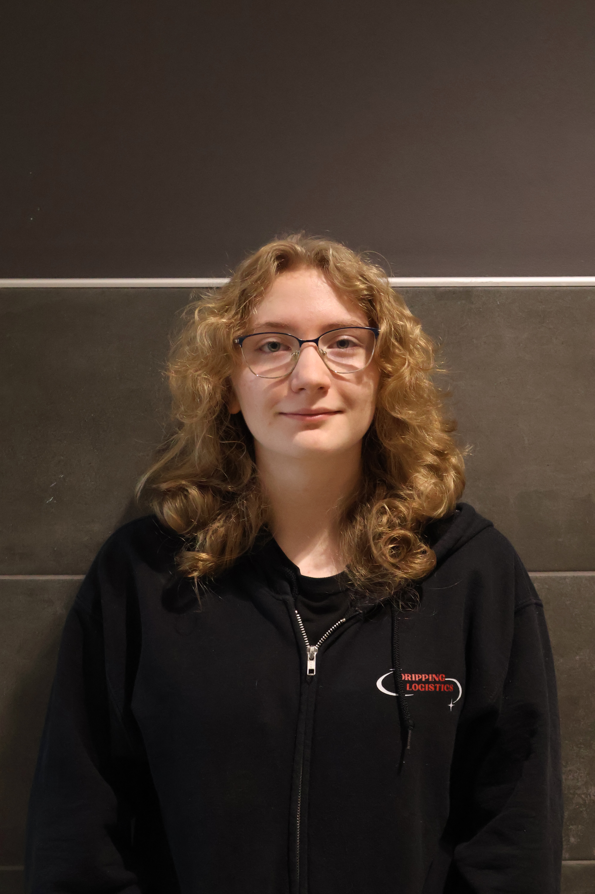
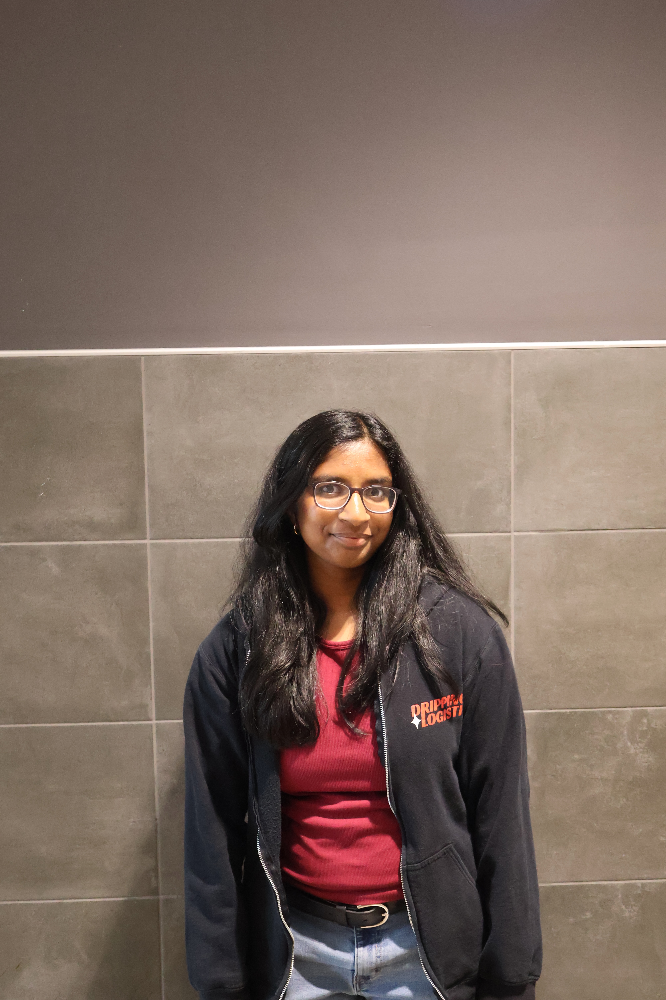

Student Testimonials
Sinead Blair (Programming lead)

Q: Why should people join robotics?
A: If you don't know what your career should be, you should join robotics. There's really something for every person, and joining robotics will get you on the right path.
Q: What's your favorite thing you learned in robotics?
A: My favorite thing that I've learned is probably how to bring people with different skillsets together.
Hansini Ramakrishnan (Business lead)

Q: How has being in robotics changed your life?
A: I became way more extroverted. Now I can hold a conversation without saying "like" and "um."
Q: What's the community like?
A: I feel like because it's a smaller team it's tighter knit, and it feels like a family.
Teacher Testimonials
Mr. McCauley
Q: What is robotics?
A: BEST Robotics is so much more than just building and programming a robot. It's an opportunity for students to take what they've learned in the classroom and apply it to real-world challenges. Students work together to brainstorm ideas, solve problems, design solutions, and learn from their mistakes. At its core, robotics is about learning how to think critically, collaborate with others, and turn an idea into something real.
Q: Why should people join robotics?
A: Because BEST Robotics gives you the opportunity to discover skills and abilities you might not even know you have. I've watched students join our team with absolutely no experience and grow into confident problem-solvers and leaders. Robotics challenges you in ways that a traditional classroom often can't. Things won't always work the first time, and sometimes your best ideas will fail. But that's where some of the most valuable learning happens. Beyond the technical skills, students develop friendships, learn to trust one another, and experience what it means to work toward a common goal. You don't have to be the smartest person in the room or know anything about engineering to be successful. You just have to be willing to learn, contribute, and challenge yourself.
Q: If you could say one thing to someone thinking about joining robotics, what would it be?
A: Don't let what you don't know keep you from trying something new. You don't need to know how to build a robot, write code, or use a power tool before joining. Some of the most impressive students I've coached started with no experience at all. What matters is your willingness to show up, ask questions, make mistakes, and keep learning. You might join robotics thinking you're just going to build a robot, but you could walk away discovering something about yourself that you never expected.